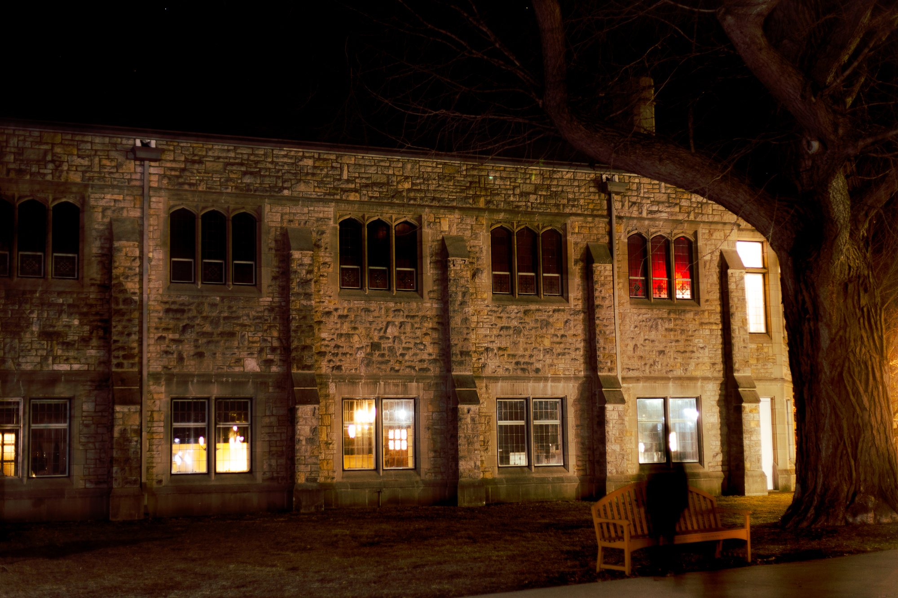
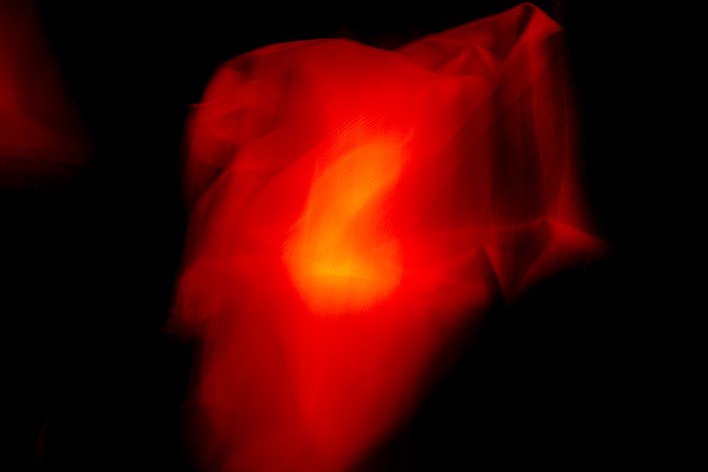
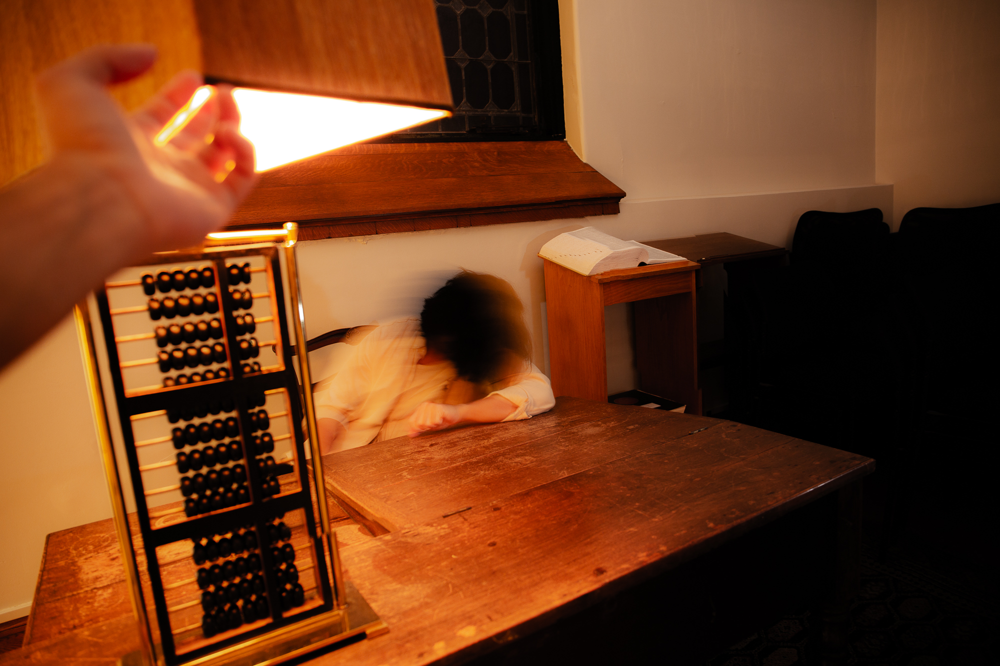
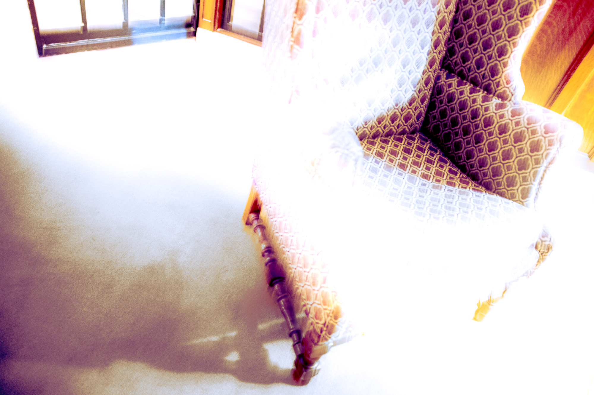
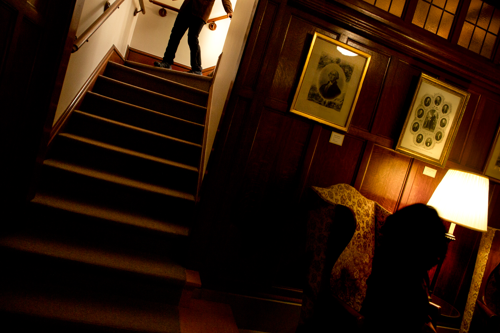
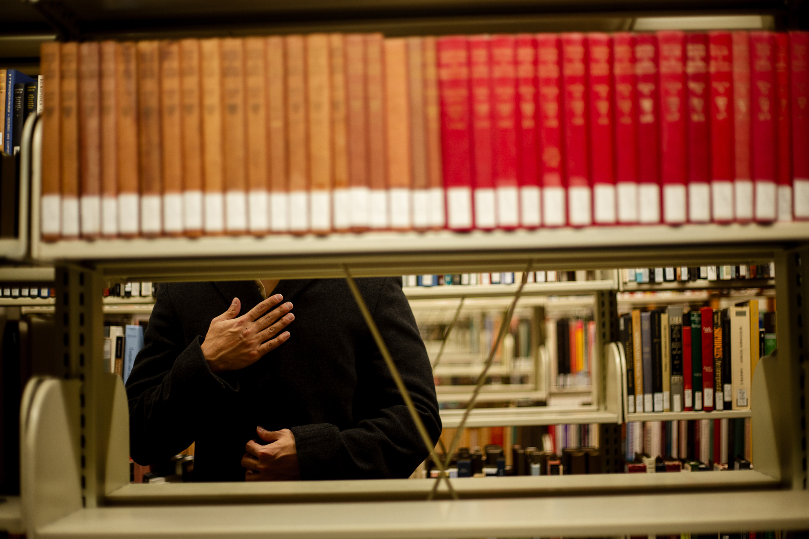
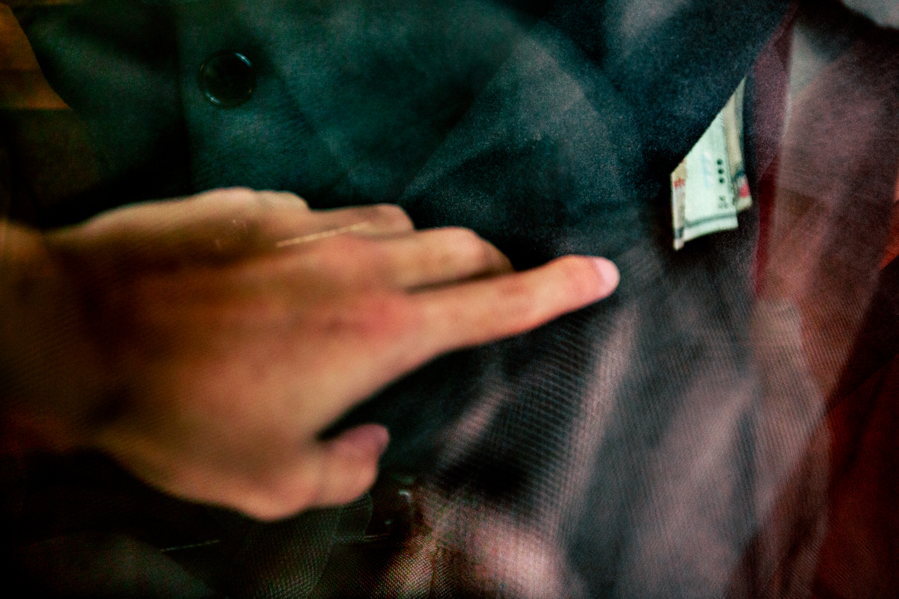
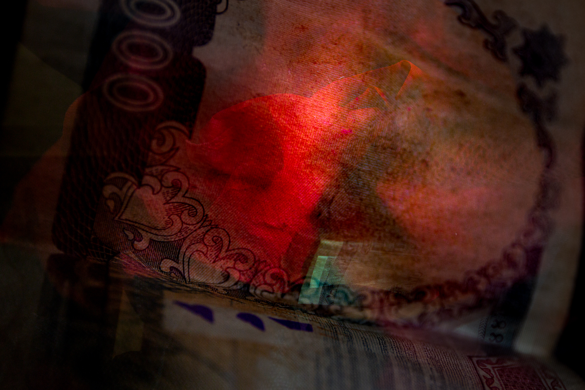
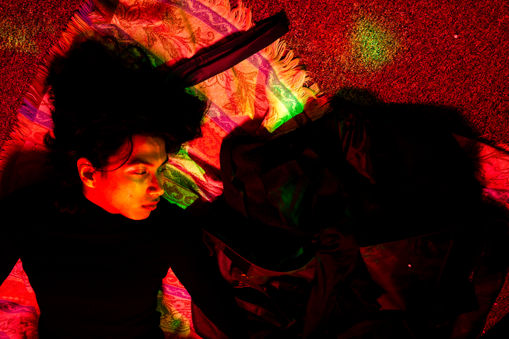
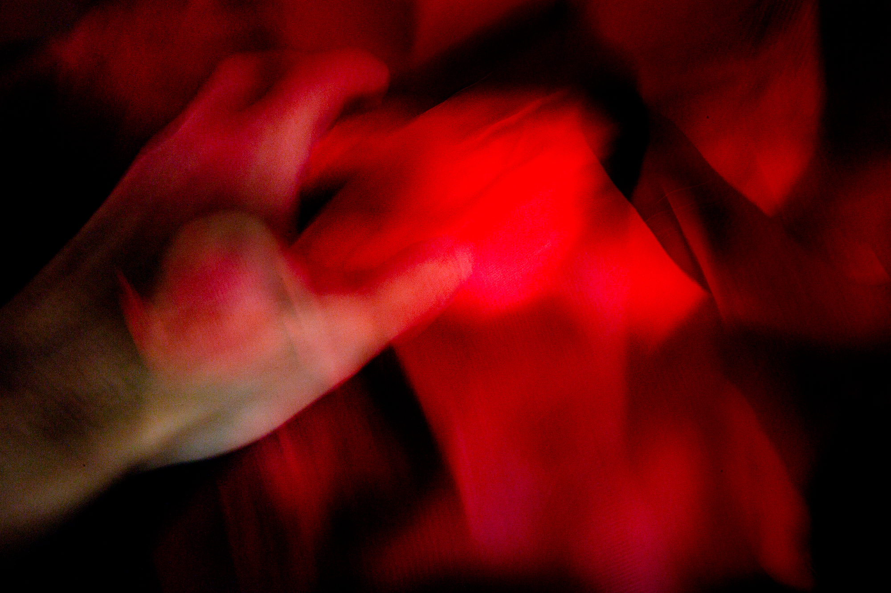

Stills from an unmade film
A sequence of photographs built as frames from a film that was never made. The images stay in one world and one mood, letting fragments carry the story.
The film follows a character chasing something that slowly destroys his soul. In rare moments of reflection he senses the
weight of his path, knowing it will consume him, but desperation keeps him moving.
The pursuit of greatness becomes an endless cycle of exhaustion and doubt,
trapping him in a battle he can never truly win. The film ends with the death of the main character.









